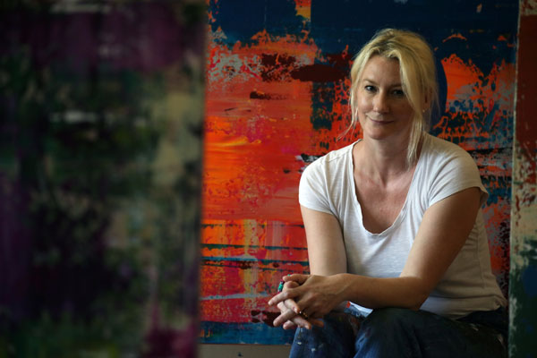

Visual Inspiration: Space Odessey by Stefanie Hauger, 2013 UOB Southeast Asian Painting of the Year Competition and 2013 UOB Painting of the Year, Singapore.
Visual Inspiration: Space Odessey by Stefanie Hauger, 2013 UOB Southeast Asian Painting of the Year Competition and 2013 UOB Painting of the Year, Singapore.
English | Bahasa Indonesia
The Competition is divided into two categories: Emerging Artist and Established Artist.
The Established Artist category is open to experienced professionals with a strong portfolio of work. They must have shown their paintings in solo or group exhibitions (excluding school graduation shows), be represented by a gallery or have achieved recognition through art awards.
The Emerging Artist category is open to aspiring artists who are pursuing an arts education, taking their first steps to a career in art or simply painting for pleasure.
There are no age restrictions for either the Emerging Artist or Established Artist category.
Artists may enter their artwork in only one of the two categories. Each participant may submit a maximum of three entries for one category.
Photograph submission for first round of judging
Submission of original paintings for shortlisted artists
How do I enter the Competition?
Artists may download the UOB Painting of the Year competition entry form here. The entry forms are also available at all UOB branches in Indonesia, Malaysia, Singapore and Thailand. Participants should use the entry form from the country they wish to participate in.
I am currently based outside of the four participating countries. How can I participate?
The UOB Painting of the Year competition is open to citizens and residents of Indonesia, Malaysia, Singapore and Thailand. If you are unable to submit your painting in person, a proxy can submit the painting on your behalf. The proxy must provide a signed authorisation letter from you and a copy of your passport or identity card.
What is an Established Artist?
The Established Artist category is open to experienced professionals with an established portfolio of work. They must have shown their paintings in solo or group exhibitions (excluding school graduation shows); be represented by a gallery; or have achieved recognition through art awards.
What is an Emerging Artist?
The Emerging Artist category is open to aspiring artists who are pursuing an arts education; are taking their first steps to a career in art; or simply paint for pleasure
I have participated in and/or received a prize in a previous UOB Painting of the Year competition. Am I still eligible to participate?
As a previous winner, you need to enter your artwork in the Established Artist category.
I am a recipient of other international art prizes. Am I still eligible to participate?
Yes, having won other art prizes you would be eligible to enter the Established Artist category of the UOB Painting of the Year competition.
How can I submit my painting?
There are two submission rounds for the UOB Painting of the Year competition in Indonesia.
Round 1: Photograph submission
Participants will need to submit a high resolution photograph (minimum size 8R) of their painting before 10 September 2014 to:
UOB Painting Of the Year Committee
UOB Plaza 12th Floor, Jl MH Thamrin no.10
Jakarta 10230
Phone : (021) 2350 6000 Ext. 31233/31240
Fax: (021) 2993 6632
The judges will make a shortlist for the second and final round of judging, based on the photo submissions.
Round 2: Submission of original paintings
Shortlisted artists for the second round of judging will be notified starting 26 September 2014 to submit their original paintings for the second and final round of judging.
Are there restrictions on the size or type of media I can use for my painting?
Original paintings in acrylic, batik, Chinese brush, collage, crayon, ink, mixed media, oil, watercolour or any other media are accepted. Paintings submitted should be two-dimensional. Paintings should not exceed 180 cm in height or width (inclusive of their frames).
Paintings submitted as a series to make up a single artwork should not exceed three (3) individual pieces that make up the whole artwork, or if conjoined, are to be submitted as a triptych (3-panel artwork). The total dimensions of all the three (3) individual pieces combined that constitutes the whole artwork and/or the triptych (if conjoined) should not exceed 180centimetres in total height or width
I have a painting that I created 10 years ago. Can I submit this for the Competition?
Paintings submitted must be original and created within the last two years. The entry should not have been offered for sale, published, or publicly exhibited. An exception may be made for paintings of full-time art students which have been exhibited at school graduation shows.
I am an Emerging Artist who wants to participate in the Established Artist category because I want to challenge myself. Is this possible?
Artists must meet the criteria for the category that they enter to be considered for a prize.
Can I submit entries for both categories?
No, artists must choose one category in which to participate.
Can I submit more than one entry?
Artists can submit up to three entries in their chosen category.
I am not able to submit my painting on the dates specified as I am travelling. Can I submit my painting on an earlier or later date?
In order to be considered for this year's Competition, participants must submit a photograph of their painting for the first round of judging from 10 September 2014.
Shortlisted artists for the second and final round of judging must submit their original paintings between 1 - 10 October 2014.
Are digital photographs of my painting or scanned entry forms accepted?
No. Participants must first submit a photograph of their painting together with a hardcopy entry form for the first round of judging to be considered for the Competition. Shortlisted participants for the second round will then need to submit a physical painting.
Shortlisted participants for the second round of judging must submit their original paintings to be considered for the Competition.
Can I authorise a proxy or a friend to submit my original painting for me if I am one of the shortlisted candidates for the award?
Yes. If you are unable to submit your original painting in person, a proxy can submit the painting on your behalf. The proxy must provide a signed authorisation letter from you and a copy of your passport or identity card.
If I am a citizen of one of the participating countries but live in another participating country, where should I submit my entry?
Artists should select the country in which it is the easiest for them to submit the actual piece they want considered in the Competition. If for instance, the artist is an Indonesian citizen living in Singapore, the artist may submit his/her artwork in Indonesia or Singapore.
What are the criteria used for judging? Is there a difference between the two categories?
The judging criteria is the same for both the Established Artist and Emerging Artist categories. Judges will assess each painting based on its message, creativity, composition and techniques used.
For the Established category, the judging will be more stringent as the level of competition will be higher in this category.
How will artists who are shortlisted be notified?
Shortlisted artists will be notified by a formal letter, e-mail and/or phone by 16 October 2014.
The prize presentation will be in Singapore. If I live outside of Singapore will UOB cover my expenses to attend the awards ceremony?
The UOB Painting of the Year award winners from Indonesia, Malaysia and Thailand are invited to attend the awards ceremony in Singapore which will be held on 20 November 2014. As they are guests of UOB, all travel and accommodation expenses will be covered by UOB.
How is the Fukuoka Asian Art Museum residency programme decided upon?
One of the four UOB Painting of the Year Award country winners will be selected for a residency programme at the Fukuoka Asian Art Museum. The recipient will be selected through an interview process conducted by the judges of the Competition.
How can I collect my painting after the competition has ended?
With the exception of the award-winning entries, UOB will arrange for all the other shortlisted entries to be returned to the artists after the exhibition ends (28 October to 30 November 2014).
What happens to my painting if I am a winner?
All award-winning paintings, including the documents and materials submitted to UOB, become the property of UOB. Participants may wish to photograph their submissions for their own records prior to submission.
English | Bahasa Melayu | 中文
The Competition is divided into two categories: Emerging Artist and Established Artist.
The Established Artist category is open to experienced professionals with a strong portfolio of work. They must have shown their paintings in solo or group exhibitions (excluding school graduation shows), be represented by a gallery or have achieved recognition through art awards.
The Emerging Artist category is open to aspiring artists who are pursuing an arts education, taking their first steps to a career in art or simply painting for pleasure.
There are no age restrictions for either the Emerging Artist or Established Artist category.
Artists may enter their artwork in only one of the two categories. Each participant may submit a maximum of three entries for one category.
How do I enter the Competition?
Artists may download the UOB Painting of the Year competition entry form here. The entry forms are also available at all UOB branches in Indonesia, Malaysia, Singapore and Thailand. Participants should use the entry form from the country they wish to participate in.
I am currently based outside of the four participating countries. How can I participate?
The UOB Painting of the Year competition is open to citizens and residents of Indonesia, Malaysia, Singapore and Thailand. If you are unable to submit your painting in person, a proxy can submit the painting on your behalf. The proxy must provide a signed authorisation letter from you and a copy of your passport or identity card.
What is an Established Artist?
The Established Artist category is open to experienced professionals with an established portfolio of work. They must have shown their paintings in solo or group exhibitions (excluding school graduation shows); be represented by a gallery; or have achieved recognition through art awards.
What is an Emerging Artist?
The Emerging Artist category is open to aspiring artists who are pursuing an arts education; are taking their first steps to a career in art; or simply paint for pleasure.
I have participated in and/or received a prize in a previous UOB Painting of the Year competition. Am I still eligible to participate?
As a previous winner, you need to enter your artwork in the Established Artist category.
I am a recipient of other international art prizes. Am I still eligible to participate?
Yes, having won other art prizes you would be eligible to enter the Established Artist category of the UOB Painting of the Year competition.
How can I submit my painting?
Paintings and entry forms are to be submitted by hand at Penthouse, Level 17, Menara UOB, Jalan Raja Laut, Kuala Lumpur on 10-13 October 2014 between 10am and 4pm daily.
Alternatively, if you are unable to submit your paintings and entry forms in person, you may choose to send it by registered post to the following address:
2014 UOB Painting of the Year Competition
Level 17, Menara UOB
Jalan Raja Laut
50350 Kuala Lumpur
All entries must arrive by 13 October 2014 in order to qualify for the Competition.
Are there restrictions on the size or type of media I can use for my painting?
Original paintings in acrylic, batik, Chinese brush, collage, crayon, ink, mixed media, oil, watercolour or any other media are accepted. Paintings submitted should be two-dimensional, of reasonable size, and properly framed. Paintings should not exceed 180 cm in height or width (inclusive of their frames).
Paintings submitted as a series to make up a single artwork should not exceed three individual pieces that make up the whole artwork, or if conjoined, are to be submitted as a triptych (3-panel artwork). The total dimensions of all individual pieces that constitute the whole artwork and/or the triptych (if conjoined), should not exceed 180 cm in height or width.
I have a painting that I created 10 years ago. Can I submit this for the Competition?
Paintings submitted must be original and created within the last two years. The entry should not have been offered for sale, published, or publicly exhibited. An exception may be made for paintings of full-time art students which have been exhibited at school graduation shows.
I am an Emerging Artist who wants to participate in the Established Artist category because I want to challenge myself. Is this possible?
Artists must meet the criteria for the category that they enter to be considered for a prize.
Can I submit entries for both categories?
No, artists must choose one category in which to participate.
Can I submit more than one entry?
Artists can submit up to three entries in their chosen category.
Can I authorise a proxy or a friend to submit my original painting for me if I am one of the shortlisted candidates for the award?
Yes. If you are unable to submit your original painting in person, a proxy can submit the painting on your behalf. The proxy must provide a signed authorisation letter from you and a copy of your passport or identity card.
I am not able to make my submission on the dates specified as I am travelling. Can I make my submission on an earlier or later date?
In order to be considered for this year’s competition, entries must be submitted on these dates. If you are unable to submit your painting in person, you may post your paintings to us or appoint a proxy to submit the painting on your behalf. The proxy must provide a signed authorisation letter from you and a copy of your passport or identity card.
Are digital photographs of my painting or scanned entry forms accepted?
No. Participants must submit a physical painting and hardcopy entry form to be considered for the competition.
I am based overseas. Can I ship my original painting to the submission venue?
Yes. Please send your painting(s) and entry form to:
2014 UOB Painting of the Year Competition
Level 17, Menara UOB
Jalan Raja Laut
50350 Kuala Lumpur
Kindly note that we will not be held responsible if your painting(s) arrive damaged. Alternatively, do consider appointing a proxy to submit the painting on your behalf. The proxy must provide a signed authorisation letter from you and a copy of your passport or identity card.
Q12: If I am a citizen of one of the participating countries but live in another participating country, where should I submit my entry?
Artists should select the country in which it is the easiest for them to submit the actual piece they want considered in the competition. For instance, if the artist is a Singapore citizen living in Malaysia, the artist may submit his/her artwork in Singapore or Malaysia.
What are the criteria used for judging? Is there a difference between the two categories?
The judging criteria are the same for both the Established Artist and Emerging Artist categories. Judges will assess each painting based on its message, creativity, composition and techniques used.
For the Established category, the judging will be more stringent as the level of competition will be higher in this category.
How will artists who are shortlisted be notified?
Shortlisted artists will be notified by phone by 28 October 2014.
The prize presentation will be in Singapore. If I live outside of Singapore will UOB cover my expenses to attend the awards ceremony?
The UOB Painting of the Year award winners from Indonesia, Malaysia and Thailand are invited to attend the awards ceremony in Singapore which will be held in November 2014. As they are guests of UOB, all travel and accommodation expenses will be covered by UOB.
How is the Fukuoka Asian Art Museum residency programme decided upon?
One of the four UOB Painting of the Year Award country winners will be selected for a residency programme at the Fukuoka Asian Art Museum. The recipient will be selected through an interview process conducted by the judges of the Competition.
Will I be disqualified if I have won a prize but I am unable to attend the local awards ceremony?
We would love to have you at the local awards ceremony but if you are unable to attend, we will arrange prize collection at a later date for you.
Will I be qualified for the Fukuoka Asian Art Museum residency programme if I am unable to make it to Singapore for the interview?
We regret to note that all UOB Painting of the Year country winners would have to undergo the interview process to be considered for the Fukuoka Asian Art Museum residency programme.
How can I collect my painting after the competition has ended?
With the exception of the award-winning entries, all other entries must be collected between 7 and 10 November 2014 from Penthouse, Level 17, Menara UOB, 50350 Kuala Lumpur. Collection is from 10am to 4pm daily.
What happens to my artwork if I do not collect it?
Artwork which is not collected by 4pm on 10 November 2014 becomes the property of UOB.
What happens to my painting if I am a winner?
All award-winning paintings, including the documents and materials submitted to UOB, become the property of UOB. Participants may wish to photograph their submissions for their own records prior to submission.
English | 中文
The Competition is divided into two categories: Emerging Artist and Established Artist.
The Established Artist category is open to experienced professionals with a strong portfolio of work. They must have shown their paintings in solo or group exhibitions (excluding school graduation shows), be represented by a gallery or have achieved recognition through art awards.
The Emerging Artist category is open to aspiring artists who are pursuing an arts education, taking their first steps to a career in art or simply painting for pleasure.
There are no age restrictions for either the Emerging Artist or Established Artist category.
Artists may enter their artwork in only one of the two categories. Each participant may submit a maximum of three entries for one category.
如何参加比赛？
画家可到此外下载大华银行全国绘画比赛的报名表格。此外，在印尼、马来西亚、新加坡和泰国的所有大华银行分行均可提供报名表格。参赛者应使用他们想要参加的国家组别的报名表格。
我目前居住在四个参与国家以外的地区。我应如何参加比赛？
大华银行全国绘画比赛开放给印尼、马来西亚、新加坡和泰国的公民和居民参加。如果您无法亲自递交您的画作，可由一位代理人代您递交。代理人必须提出一封由您签名的授权书及您的护照或身份证复印本。
何谓资深画家？
大华银行全国绘画比赛的资深画家组开放给有经验的专业画家参加。他们必须单独举办或参加过展览（不包括学校毕业展览）；由画廊代理其作品；或曾有作品获奖。
何谓新锐画家？
大华银行全国绘画比赛的新锐画家组开放给以下画家参加：接受美术教育的学生；刚刚开始绘画职业的画家；或以绘画为爱好的人士。
我曾经参加以往的大华银行《年度之画》竞赛且曾经得奖。我是否仍有资格参加？
曾获得奖项者将有资格参加大华银行全国绘画比赛的资深画家组。
我是其他国际美术奖的得奖者。我是否仍有资格参加？
是的，曾获得其他美术奖项者将有资格参加大华银行全国绘画比赛的资深画家组。
如何递交我的画作？
画作和报名表格必须在2014年 10 月 10-12 日早上 11 时至下午 5 时之间递交至Helu-Trans（39 Keppel Road, Tanjong Pagar Distripark,Singapore 089065）。
画作尺寸或可使用的素材种类是否有任何限制？
比赛将接受使用塑胶彩（丙烯）、峇迪布、中国毛笔、拼贴、墨水、综合素材、油彩、水彩或其他任何素材的画作。参赛的画作必须为平面、尺寸合宜并已完整框好。恕不接受高度或宽度超过 180 厘米（包括其画框）的画作。 由一系列画作组成的单一参赛作品最多只能包含三件画作，或以三幅相连的形式参赛。组成整体作品及/或三幅相连作品（接合后）的所有画作的总高度或总宽度不可超过 180 厘米。
我有一幅在 10 年前完成的画作。我可否递交这幅作品参加比赛？
递交的画作必须是最近两年内完成的原创作品。参赛作品不得曾被贩售、发表、参加以往比赛或以任何形式公开展出。全日制美术科系学生在学校毕业展览上展出的画作则可视情况而定获准参加。
我是一位想要参加资深画家组的新锐画家，因为我想要挑战自己。我可以这么做吗？
画家必须符合其所参加的组别条件，方有资格领奖。
我可否将作品报名参加两个组别？
不可以，画家必须选择参加其中一个组别。
我可否递交超过一件作品？
画家可递交最多三件作品参加其选择的组别。
我可否授权一位代理人或朋友为我递交我的作品？
可以。如果您无法亲自递交您的画作，可由一位代理人代您递交。代理人必须提出一封由您签名的授权书及您的护照或身份证复印本。
我无法在指定日期内递交我的画作，因为我正在国外。我可否提前或延后递交我的画作？
参赛作品必须在指定期间递交，方可在今年的比赛中列入评选考量。如果您无法亲自递交您的画作，可由一位代理人代您递交。代理人必须提出一封由您签名的授权书及您的护照或身份证复印本。
是否接受我的画作的数码照片或扫描的报名表格？
不接受。参赛者必须递交实体画作和报名表格正本，方可被列入评选考量。
我目前住在国外。我可否将我的画作和报名表格寄至交件地点？
很遗憾地，我们无法接受以此方式寄来的作品。如果您无法亲自递交您的画作，可由一位代理人代您递交。代理人必须提出一封由您签名的授权书及您的护照或身份证复印本。
如果我是其中一个参与国家的公民，但居住在另一个参与国家，我应该在哪里递交我的参赛作品？
画家应选择最方便且欲列入比赛评选的国家递交画作。例如，如果画家是一位居住在马来西亚的新加坡公民，画家可在新加坡或马来西亚递交其画作。
评选标准是什么？两个组别的评审标准是否有差别？
资深画家和新锐画家两组的评审标准是相同的。评审将根据作品所传达的讯息、创意、构图和使用的技巧评鉴每一幅画作。
资深画家组的评审标准较为严格，因为此组的比赛水准较高。
入选的画家将如何接获通知？
入选的画家将在 2014年 10 月 19 日以前接获电话通知。
颁奖典礼将在新加坡举行。如果我不住在新加坡，大华银行是否会支付我参加颁奖典礼的费用？
来自印尼、马来西亚和泰国的大华银行年度最佳画作奖得主将受邀参加2014年11月在新加坡举行的颁奖典礼。由于他们是大华银行的贵宾，因此所有交通和住宿费用将由大华银行支付。
福岗亚洲美术馆驻馆创作计划如何决定其人选？
四位大华银行年度最佳画作奖的各国得奖画家之中将有一位可获选参加福岗亚洲美术馆的驻馆创作计划。获选者将经由大华银行全国绘画比赛评审所主持的面谈过程中选出。
比赛结束后如何领回我的画作？
除了参展的得奖作品之外，参赛者必须在 2014 年 10 月 18日至 19 日之间到 Helu-Trans（39 Keppel Road, Tanjong Pagar Distripark, Singapore 089065）领回其他所有参赛作品，受理领回画作的时间为每天早上 11 时至下午 5 时。
如果我未领回我的画作，将会如何处置？
在 2014年10 月 19 日下午5 时以前未被领回的画作将归大华银行所有。
如果我是一名得奖者，我的画作将如何处置？
所有得奖画作包括递交给大华银行的文件和材料皆归大华银行所有。建议参赛者在递交前为其参赛作品拍摄照片作为记录保存。
English | ภาษาไทย
The Competition is divided into two categories: Emerging Artist and Established Artist.
The Established Artist category is open to experienced professionals with a strong portfolio of work. They must have shown their paintings in solo or group exhibitions (excluding school graduation shows), be represented by a gallery or have achieved recognition through art awards.
The Emerging Artist category is open to aspiring artists who are pursuing an arts education, taking their first steps to a career in art or simply painting for pleasure.
There are no age restrictions for either the Emerging Artist or Established Artist category.
Artists may enter their artwork in only one of the two categories. Each participant may submit a maximum of three entries for one category.
How do I enter the Competition?
Artists may download the UOB Painting of the Year competition entry form here. The entry forms are also available at all UOB branches in Indonesia, Malaysia, Singapore and Thailand. Participants should use the entry form from the country they wish to participate in.
I am currently based outside of the four participating countries. How can I participate?
The UOB Painting of the Year competition is open to citizens and residents of Indonesia, Malaysia, Singapore and Thailand. If you are unable to submit your painting in person, a proxy can submit the painting on your behalf. The proxy must provide a signed authorisation letter from you and a copy of your passport or identity card.
What is an Established Artist?
The Established Artist category is open to experienced professionals with an established portfolio of work. They must have shown their paintings in solo or group exhibitions (excluding school graduation shows); be represented by a gallery; or have achieved recognition through art awards.
What is an Emerging Artist?
The Emerging Artist category is open to aspiring artists who are pursuing an arts education; are taking their first steps to a career in art; or simply paint for pleasure.
I have participated in and/or received a prize in a previous UOB Painting of the Year competition. Am I still eligible to participate?
As a previous winner, you need to enter your artwork in the Established Artist category.
I am a recipient of other international art prizes. Am I still eligible to participate?
Yes, having won other art prizes you would be eligible to enter the Established Artist category of the UOB Painting of the Year competition.
How can I submit my painting?
Paintings and entry forms are to be submitted to Silpakorn Art Center, Thapra Palace, Bangkok, during 1-5 October 2014 between 11am and 4pm daily.
Are there restrictions on the size or type of media I can use for my painting?
Original paintings in acrylic, batik, Chinese brush, collage, crayon, ink, mixed media, oil, watercolour or any other media are accepted. Paintings submitted should be two-dimensional. Paintings should not exceed 180 cm in height or width (inclusive of their frames).
Paintings submitted as a series to make up a single artwork should not exceed three (3) individual pieces that make up the whole artwork, or if conjoined, are to be submitted as a triptych (3-panel artwork). The total dimensions of all the three (3) individual pieces combined that constitutes the whole artwork and/or the triptych (if conjoined) should not exceed 180 centimetres in total height or width.
I have a painting that I created 10 years ago. Can I submit this for the Competition?
Paintings submitted must be original and created within the last two years. The entry should not have been offered for sale, published, or publicly exhibited. An exception may be made for paintings of full-time art students which have been exhibited at school graduation shows.
I am an Emerging Artist who wants to participate in the Established Artist category because I want to challenge myself. Is this possible?
Artists must meet the criteria for the category that they enter to be considered for a prize.
Can I submit entries for both categories?
No, artists must choose one category in which to participate.
Can I submit more than one entry?
Artists can submit up to three entries in their chosen category.
Can I authorise a proxy or a friend to submit my original painting for me if I am one of the shortlisted candidates for the award?
Yes. If you are unable to submit your painting in person, a proxy can submit the painting on your behalf. The proxy must provide a signed authorisation letter from you and a copy of your passport or identity card.
I am not able to make my submission on the dates specified as I am travelling. Can I make my submission on an earlier or later date?
In order to be considered for this year’s competition, entries must be submitted on these dates. If you are unable to submit your painting in person, a proxy can submit the painting on your behalf. The proxy must provide a signed authorisation letter from you and a copy of your passport or identity card.
Are digital photographs of my painting or scanned entry forms accepted?
No. Participants must submit a physical painting and hardcopy entry form to be considered for the competition.
I am based overseas. Can I ship my original painting to the submission venue?
Unfortunately, we are unable to accept such shipments. If you are unable to submit your painting in person, a proxy may submit the painting on your behalf. The proxy must provide a signed authorisation letter from you and a copy of your passport or identity card.
If I am a citizen of one of the participating countries but live in another participating country, where should I submit my entry?
Artists should select the country in which it is the easiest for them to submit the actual piece they want considered in the competition. If for instance, the artist is a Singapore citizen living in Malaysia, the artist may submit his/her artwork in Singapore or Malaysia.
What are the criteria used for judging? Is there a difference between the two categories?
The judging criteria is the same for both the Established Artist and Emerging Artist categories. Judges will assess each painting based on its message, creativity, composition and techniques used.
For the Established category, the judging will be more stringent as the level of competition will be higher in this category.
How will artists who are shortlisted be notified?
Shortlisted artists will be notified by phone by 10 October 2014.
The prize presentation will be in Singapore. If I live outside of Singapore will UOB cover my expenses to attend the awards ceremony?
The UOB Painting of the Year award winners from Indonesia, Malaysia and Thailand are invited to attend the awards ceremony in Singapore which will be held in November 2014. As they are guests of UOB, all travel and accommodation expenses will be covered by UOB.
How is the Fukuoka Asian Art Museum residency programme decided upon?
One of the four UOB Painting of the Year Award country winners will be selected for a residency programme at the Fukuoka Asian Art Museum. The recipient will be selected through an interview process conducted by the judges of the Competition.
How can I collect my painting after the competition has ended?
With the exception of the award-winning entries, all other entries must be collected between 18 to 24 October 2014 from Silpakorn Art Center, Thapra Palace, Bangkok). Collection is from 11am to 4pm daily.
What happens to my artwork if I do not collect it?
Artwork which is not collected by 4pm on 24 October 2014 becomes the property of UOB.
What happens to my painting if I am a winner?
All award-winning paintings, including the documents and materials submitted to UOB, become the property of UOB. Participants may wish to photograph their submissions for their own records prior to submission.
English | Bahasa Indonesia | Bahasa Melayu | 中文 | ภาษาไทย
两个组别的奖项如下：
| *大华银行年度最佳画作奖 （印尼、马来西亚、新加坡、泰国） US$25,000 |
| *金奖 （印尼、马来西亚、新加坡、泰国） US$10,000 |
| *银奖 （印尼、马来西亚、新加坡、泰国） US$8,000 |
| *铜奖 （印尼、马来西亚、新加坡、泰国） US$5,000 |
大华银行东南亚年度最佳画作奖US$10,000这项区域奖项将颁发给四位代表其国家的大华银行年度最佳画作奖得主之中表现最突出的一位画家 |
| 福岗亚洲美术馆驻馆创作计划 四位大华银行年度最佳画作奖的各国得奖画家之中将有一位可获选加入福岗亚洲美术馆的驻馆创作计划。获选者将经由大华银行全国绘画比赛评审所主持的面谈过程中选出。 |
*每一国家有一位获奖者。
| *大华银行年度最具潜力画家奖 （印尼、马来西亚、新加坡、泰国） US$3,000 |
| *金奖 （印尼、马来西亚、新加坡、泰国） US$2,500 |
| *银奖 （印尼、马来西亚、新加坡、泰国） US$1,500 |
| *铜奖 （印尼、马来西亚、新加坡、泰国） US$1,000 |
*每一国家有一位获奖者。
English | Bahasa Indonesia | Bahasa Melayu | 中文 | ภาษาไทย
Waves by Anthony Poon,
1983 UOB Painting of the Year - Singapore
那一年是 1982 年，正当新加坡现代艺术蓬勃发展的年代。大华银行（UOB）本着鼓励具有远大抱负的画家全心追求其创作梦想的热忱，开始在新加坡举办一年一度的全国绘画比赛。
历经三十二年，大华银行全国绘画比赛现已成为新加坡连续举办最多次的艺术类赛事，同时也是本区域最受瞩目的重要比赛之一。我们从中发掘了无数年轻的新进画家，同时也表彰了多位专业艺术家对东南亚艺术发展的伟大贡献。
对许多新进画家而言，在这项比赛中获奖使得他们的艺术天份受到关注，并可鼓励他们朝职业画家的理想迈进。其中一位在大华银行全国绘画比赛中崭露头角的画家便是 龚瑶敏。当他在 2002 年凭其作品“The Impression of Singapore, Series Three, Colour Space”（新加坡印象 / 第三系列 / 彩色空间）获奖时，曾深刻地表示得奖为他带来更多珍贵的绘画时间，让他可以继续琢磨自己的技巧。
确实如此，这些时间为他带来了更丰硕的成果。龚瑶敏在 2011 年再度以“My Dream Land”（我的梦想国土）勇夺大华银行年度最佳画作奖，这幅作品展现出更鲜明的风格及令人叹服的技巧。他擅于运用传统中国水墨技巧刻划现代题材的功力始终倍受赞赏。
另一位也是最佳画作奖双冠军得主的陈月丽 也继续透过其探索当代亚洲定位的作品受到高度的肯定。 她独帜一格的纯净画风、鲜明的色彩及敏锐的图像感受力使其得奖画作：1997 年的 “Endless Love”（无尽的爱）及 2004 年的 “The World Of Xi You Ji”（西游记的世界）皆深受大众的青睐。

Dunes by Goh Beng Kwan,
1982 UOB Painting of the Year - Singapore
大华银行全国绘画比赛的历届得奖人之中有多位目前已成为新加坡国宝级的画家。其中包括新加坡现代艺术大师之一 – 吴珉权。他在 1982 年首届全国绘画比赛中的得奖画作是一幅充满诗意且情感丰富的抽象拼贴作品“The Dune”(沙丘)，灵感启发自他在美国麻州普罗温斯敦学习拼贴艺术的时光。获奖之后，吴珉权继续在抽象画创作上展现突出的艺术成就，并在 1989 年荣获新加坡文化奖。
其他著名的得奖画家还包括 1983 年的最佳画作奖得主、同时也是新加坡最早的抽象画艺术家之一 方谨顺及，以现代中国水墨画闻名的 1991 年得奖者蔡逸溪。 这两位画家都分别在 1990 年和 1999 年获颁新加坡文化奖的奖章。
2011 年至 2012 年间，大华银行开始扩大举办全国绘画比赛的范围，开放给来自印尼、马来西亚和泰国的画家参加，为这项比赛注入更多创意灵感及热热忱，发掘更多绘画人才。2012 年，荣获区域卓越作品奖的印尼画家 Y. Indra Wahyu 透过其作品“School Hymns”（学校音乐课）描绘一个学校合唱团，并向学校传授知识及建立一个和谐社会的崇高使命致敬。
My Dream Land by Gong Yao Min,
2011 UOB Painting of the Year - Singapore
2012 年的绘画比赛则认可多位新进画家的绘画天赋，如马来西亚的 Mohd Azri bin Abdullah 及泰国的 Imrom Yunu，他们皆获得其各自国家的年度最佳画作奖。Abdullah 以一幅采用炭笔和沥青为素材的作品“Ah Long”（阿窿）刻划出非法高利贷业者的黑暗世界，深深慑住评审的目光。Yunu 则以其最钟爱的祖母的画像表达祖母灌输给他的强大宗教价值观及人性本善的信念，令大家为之动容。
今年，大华银行全国绘画比赛的艺廊同样保留了一个展览空间，以肯定能够用他们的洞察力激发人类心灵的画家。
Inspiration in The Unexpected
Inspiration comes from situations and issues that touch our hearts, and can also be found in the most unlikely places. This video draws upon some possible ideas that might have inspired a few of our artists over the past three decades and how each painting might have inspired the viewer.
UOB Painting of the Year Reimagined
Fourteen pieces from the UOB Painting of the Year collection were deconstructed and digitally reimagined using the dimensions of sound, space and time. The result was a series of digital animations of the paintings that draw you into the mind of each artist, their creative inspiration and the finer details of the artwork.
Fresh Paint: Alvin Ong and Esmond Loh
Mr Alvin Ong and Mr Esmond Loh are two young artists who are painting their dreams. After winning the UOB Painting of the Year competition in their teens, the former St. Joseph’s Institution students are now taking the next steps in their artistic careers.
Bold Strokes: Gong Yao Min
Chinese ink painter, Mr Gong Yao Min, puts his modern twist on a traditional artform in his cityscapes of Singapore. Find out what inspires this two-time UOB Painting of the Year winner, and how his style of painting has evolved.

Ms Stefanie Hauger is the winner of the 2013 UOB Southeast Asian and Singapore Painting of the Year Awards. Her love for the arts began at an early age as she accompanied her parents to art exhibitions and museums. Her mother is an artist and photographer and her father was an avid collector of art and antiques.
Ms Hauger became a full time artist in 2011 and has since shown her sculptures and paintings at several exhibitions in Singapore.
The UOB Painting of the Year team caught up with Ms Hauger in her art studio to find out more about her passion and vision as an artist.
A: Creation and curiosity motivate me. It is the thrill of making something that has not been done before and discovering what I can do within the realm of art. It was the same when I was a designer. I was always looking to break molds and to do something fresh and new. I never wanted to be a traditional painter.
A: They evolve organically. I am constantly thinking of new ways to manipulate the paint, or the medium with which I work. I spend a lot of time studying other artists and what they have done. I look at their work and I ask myself how can I do that differently? How can I push the boundaries?
A: What motivated me as a designer has definitely influenced my vision in arts. As a designer, I am drawn to things which are simple and which exhibit a timeless quality. Similarly as an artist, I want to create artworks that convey balance and purity.
My brain works spatially. I think in three dimensions. When I am creating a work of art, I create it in situ. I always think of the home where the art piece would be displayed and imagine how it would fit in. This is the reason why I work with large canvases because I see them in contemporary homes with brave and bold owners.
A: My mother lived in a small town in Germany where she had a captive audience. The local scene in terms of contemporary art is still evolving, so I think it is harder to be understood as a contemporary artist in Singapore.
A: Winning the awards has changed the way that I work as an artist. The awards are a massive validation of my art. They have given me the confidence and the courage to be bold and creative in my artworks.
Winning took me from being a little-known artist to a recognised name within the local art community. It has given me access to people that I did not have access to before. It has also enabled me to approach galleries on a totally different platform. I am starting to work with a gallery in Sydney and another one here in Singapore.
People stop and take notice of my works now because of the awards. The whole UOB Painting of the Year experience has been absolutely amazing!
A solo exhibition by Stefanie Hauger
24 June 2014 to 11 August 2014, UOB Plaza 1, 80 Raffles Place, Singapore 048624
New Horizons consists of two series - ‘Mandalas’ and ‘Moments’ - described by Ms Stefanie Hauger as the yin and yang of her work. The ‘Mandalas’ series consists of serene and controlled images which draw you in. In contrast, the ‘Moments’ series are edgy, dynamic and complex. Together, they show Ms Hauger’s desire to explore diverse imagery and techniques, and push the boundaries of creativity.
Ms Hauger is no stranger to pushing personal boundaries. In 2011, she stepped away from her lifestyle business Vanilla Home to become a full-time contemporary artist. New Horizons, in many ways, represents a new beginning in Ms Hauger’s journey as an artist.
New Horizons is part of a series of exhibitions at the UOB Art Gallery that will feature the latest collections by the UOB Painting of the Year alumni.
UOB Painting of the Year Award and Southeast Asian Painting of the Year Award - Singapore
Space Odyssey
Stefanie Hauger
UOB Painting of the Year Award (Established Artist) - Thailand
Hope on the Ruins No.3
Mr. Aphiphol Techamangkhalanon
UOB Painting of the Year Award (Established Artist) - Malaysia
Old Man
Mr. Gan Tee Sheng
UOB Painting of the Year Award (Established Artist) - Indonesia
Indonesian Artist’s Studio
Mr. Suroso Isur
Gold Award (Established Artist) - Indonesia
Levitasi II
Mr. Agung Suryanto
Silver Award (Established Artist) - Indonesia
Unity #5
Mr. Vani H Rahman
Bronze Award (Established Artist) - Indonesia
Revenge of Nature
Mr. Cucu Ruchyat
Most Promising Artist of the Year (Emerging Artist) - Indonesia
Balada Lutung Kasarung
Mr. Achmad Toriq
Gold Award (Emerging Artist) - Indonesia
Sisa-Sisa Mereka (Their Remnants)
Miss Camelia M Hasibuan

Bronze Award (Emerging Artist) - Indonesia
Kesendirian Yang Indah (Beautiful Loneliness)
Mr. Fikri Effendi
Bronze Award (Emerging Artist) - Indonesia
Quibble
Mr. Merry Afganial S (Anton)
Gold Award (Established Artist) - Malaysia
Homes
Mr. Cheong Tuck Wai
Silver Award (Established Artist) - Malaysia
Endless
Mr. Helmi Azam bin Tajul Aris
Bronze Award (Established Artist) - Malaysia
The Hidden Calamity of Life
Mr. Ng Swee Keat
Most Promising Artist of the Year (Emerging Artist) - Malaysia
My Inner Vision
Ms. Tin Yuan Yuan
Gold Award (Emerging Artist) - Malaysia
Visit “Culture” 1
Ms. Wong Shirley
Silver Award (Emerging Artist) - Malaysia
Sexual
Ms. Tan Lu Man
Bronze Award (Emerging Artist) - Malaysia
Exclamation Points
Mr Aely Ahmad bin Abdul Manaf
Gold Award (Established Artist) - Singapore
Digital Vertigo
Lester Lee Ngai Sing
Silver Award (Established Artist) - Singapore
Gazing “山”
Tan Rui Rong
Bronze Award (Established Artist) - Singapore
Enshrouded in Myopia
Hannah Tan Cheng Hoon
UOB Painting of the Year Award (Emerging Artist) - Singapore
The Transcendence of Love
Lim Quan Zhao
Silver Award (Emerging Artist) - Singapore
O$P$
Lim Wan Ying
Silver Award (Emerging Artist) - Singapore
Silent Life
Ong Xin Hong
Bronze Award (Emerging Artist) - Singapore
Strength
Ang Cheng Hui
Gold Award (Established Artist) - Thailand
Hell of the Thirsty Demons
Mr. Kittisak Thapkoa
Silver Award (Established Artist) - Thailand
City People (Trapped in the Rain)
Mr. Saitle Ngaorsai
Bronze Award (Established Artist) - Thailand
The Array of Lights
Mr. Boonsri Charoenying
Most Promising Artist of the Year Award (Emerging Artist) - Thailand
Veneration of the Dead
Miss Thitiprom Onpium
Gold Award (Emerging Artist) - Thailand
Reflection No.2
Mr. Kripol Kittisirot
Silver Award (Emerging Artist) - Thailand
Untitled
Mr. Nattanon Baiphowongse
Bronze Award (Emerging Artist) - Thailand
The Babbling Space No.2
Mr. Makara Chanharutai
Space Odyssey
Stefanie Hauger, (b.1969, Germany)
Acrylic on Canvas
170.0 x 170.0 cm
Ms Hauger’s contemporary interpretation of a mandala, a concentric circular diagram which helps focus attention during meditation, shows an abstract representation of a healthy planet as seen from space. By meditating on the health of the planet, the artist hopes that the viewer’s subconscious becomes invigorated by the fresh cool colours and the absence of heat. Ms Hauger says that our current planet is being destroyed and she hopes that her interpretation of a healthy planet will instill in the audience a desire to care for the planet and repair the damage being done.
From a young age, Ms Hauger has spent been immersed in the world of art and design. Her mother was a successful photographer and painter and Ms Hauger spent her childhood accompanying her mother to art exhibitions. Her father was an avid collector of art and antiques and she has a sister who is currently a Doctor of Art History. Following her training in interior architecture in the UK, Ms Hauger arrived in Singapore at the age of 24. After a long career in interior design, Ms Hauger decided to pursue her dreams and became a full-time artist in 2011.
Hope on the Ruins No.3
Mr. Aphiphol Techamangkhalanon, 23 years old
Acrylic Painting
175.0 x 140.0 cm
The city in Hope on the Ruins No.3 lies devoid of life in the darkness. Repelling the gloom, is a traditional shrine that glimmers like a beacon and casts its pale glow over rooftops. Mr. Aphiphol uses a spare palette to create the shadows and light in this atmospheric painting. The contrasting white and black reflect his belief that virtue and morality will triumph over materialism. To the artist, modernisation and technology have brought the ills of materialism to the city, casting a shadow over it and driving its inhabitants away. The shrine shimmering from within the darkness symbolises his belief in society’s virtue and its ability to withstand the test of time.
Mr. Aphiphol is a final year student from the faculty of Painting, Sculpture and Graphic Arts at the Silpakorn University. He has won many awards including the Excellent Award from the 3rd Asia Plus Art Exhibition and the 2nd Honorable Prize of Silpa Bhirasir from the 30th Exhibition of Contemporary Art by Young Artist.
Old Man
Mr. Gan Tee Sheng, (b. 1984)
Oil on Canvas
167.5 x 133.5cm
The painting depicts an old man resting by the side of the road. The tired expression reflects the old man’s loneliness and helplessness, knowing his life is coming to an end. The background and objects were blurred to express the emptiness in the old man’s mind in his state of anxiety. Through the painting, Mr. Gan wants to remind the society to give more care and attention to the elderly.
Mr. Gan Tee Sheng has been involved in a few exhibitions, including the Young & News Part III Exhibition at Matahari Gallery in 2009, Artriangle III at National Art Gallery in 2010, the Garden of Hidden Desires at Wei-ling Gallery in 2011, and the Figurative Trajectories at G13 Gallery in 2013.
Indonesian Artist’s Studio
Mr. Suroso Isur, 31 years old
Oil Painting
150.0 x 180.0 cm
The painting portrays an artist in his studio, where love and romance is in the air and fantasy and reality are intertwined. It is in his studio that Mr Suroso explores his idealism and the concept of beauty in both its modern and traditional form. The man in the painting with a cloth covering the face depicts the artist himself. Faced with paradoxical ideals and concepts, the artist finds himself locked up in isolation.
Digital Vertigo
Lester Lee Ngai Sing, (b.1964, Singapore)
Mixed Media on Canvas
180.0 x 165.0 cm
According to Mr Lee, children today are increasingly reliant on technology. The way they learn, play and communicate is changing and Mr Lee asks us through his painting if the high exposure to electronic media is a good thing. This work reflects Mr Lee’s experience of raising two children and illustrates his concerns with the impact of technology on a developing child.
Mr Lee studied under distinguished Singapore water-colourists Mr Ong Kim Seng and Mr Peh Eng Seng in the late 1980s. During this time, he received an art award from the Ministry of Communication and Information in 1989. This recognition spurred him on to improve his craft at the Nanyang Academy of Fine Arts and eventually led to a 10-year stint in the US where he developed his love for multi-disciplinary art forms including sculptures. He currently holds a Master of Art (Contemporary Practice) from the University of Huddersfield, UK. Mr Lee received a Highly Commended award at the 30th UOB Painting of the Year competition.
Gazing “山”
Tan Rui Rong, (b.1963, China)
Oil on Canvas
84.0 x 101.0 cm
There is a saying by Buddhism Master Qing Yuan Wei Xin “见山不是山” (the mountain you see is not a mountain), which explains the difference between what the eyes see and physical reality. In this painting, Mr Tan questions the fate of the new generation. The Chinese character “山” (mountain) is a representation of the obstacles that the child in the painting will face later in life.
Mr Tan has been in Singapore for more than 20 years and is currently the editor of Yuan Magazine, the Chinese culture publication by the Singapore Federation of Chinese Clan Associations. He also teaches art appreciation part-time at Singapore Institute of Management University. Mr Tan holds a Master of Arts in Translation Studies from Beijing Normal University and a Diploma in Arts from Guizhou Art School. Mr Tan previously received the Highly Commended award at the 19th UOB Painting of the Year competition.
Enshrouded in Myopia
Hannah Tan Cheng Hoon, (b.1972, Singapore)
Oil on Linen
142.0 x 142.0 cm
This still life painting of an open pomegranate wrapped in a crinkled plastic sheet is an observation of the myopic views of identity and citizenship within Singapore society. The plastic covering signifies the artificial nature of nation building activities. Ms Tan has left part of the painting unfinished to depict the young nation’s ongoing development, while the dark mass of seeds represents the issues that threaten its security. The deformed animal head in the centre of the painting illustrates the emergence of new perspectives and differing views.
Trained as a teacher, Ms Tan decided to follow her dreams and became a professional artist in 2010. Selling her first work that year emboldened her to develop her craft and she has continued to sell her works to galleries and individual collectors. Ms Tan currently marries her skills as an educator with her love of art by teaching art classes. She is also a member of the International Guild of Realism and the Portrait Society of America.
The Transcendence of Love
Lim Quan Zhao, (b.1996, Singapore)
Oil on Canvas
122.0 x 91.5 cm
In The Transcendence of Love, a father’s love shines through the seemingly quiet and dull atmosphere of a public train. The boy sleeps with his head resting on his father’s lap. The father, gazing at his son with affection and care, occasionally caresses the boy’s head. Mr Lim uses his painting to take a critical look at the world around him, yet shares the quiet beauty of a private moment to inspire a sense of warmth.
Mr Lim received a Gold with Honours award at the Singapore Youth Festival 2012 Central Judging for Art and Crafts. He is currently pursuing an International Baccalaureate Diploma at the Anglo-Chinese School (Independent) in Singapore.
O$P$
Lim Wan Ying, (b.1980, Singapore)
Mixed Media on Canvas
124.0 x 109.0 cm
This piece of artwork demonstrates the power of paint outside a gallery. Paint splashes and graffiti are common marks left by loan sharks on the properties of debtors who may be late in making payments. They are marks of shame and irresponsibility. They also reflect the helplessness of the debtors and their families. With daring strokes and colours, Ms Lim expresses the sense of isolation these families face from the lack of social sympathy.
Ms Lim started painting with watercolours and oil pastels at the age of 10. One of the winners at the 2013 Orchard Gateway Art Competition, she is currently pursuing a degree in Fine Art from the Nanyang Academy of Fine Arts in Singapore, after graduating with a Diploma in Fine Art in 2005. She is also interested in sculpture and photography.
Silent Life
Ong Xin Hong, (b.1995, Singapore)
Oil on Canvas (Triptych)
159.0 x 83.0 cm
The triptych depicts three different fallen leaves that have been conjoined together to form a whole. Through Silent Life, Ms Ong emphasises that the beauty of nature not only resides in the living but can also be found in the dead. The photorealistic style of the artwork opens the eyes to the delicate work of Mother Nature, while the monochromatic scheme of the artwork underlines the natural cycles that exist as a backdrop to the urban hustle and bustle.
Ms Ong began her training in art at the age of seven at the Nanyang Academy of Fine Arts in Singapore. She is currently studying at Nanyang Junior College under the Art Elective Programme.
Strength
Ang Cheng Hui, (b.1997, Singapore)
Oil on Canvas
180.0 x 114.0 cm
The daily turmoil from a life that is too fast, too rushed and too messy can lead to a feeling of suffocation. Against this, Ms Ang seeks to capture the moment when one uses their last ounce of strength to break free from turmoil and reach a goal. Using the raw and unfinished quality of the medium, Ms Ang’s artwork emphasises the vitality of the human spirit and strength over the surrounding turmoil.
Ms Ang recently completed her GCE O-Level examinations at the Nanyang Girls High School in Singapore, where she was enrolled in the Art Elective Programme. Soon, she will be continuing her studies at the Hwa Chong Institution. Ms Ang has a deep interest in the fine arts and dance, both of which came together to inspire this work.

The Impression Of Singapore Series - Three, Colour Space
Gong Yao Min, (b.1964, China)
Chinese Ink and Colour on Paper
182.5 x 182.0 cm
Mr Gong's impression of Singapore is that of a dense and compact city with pockets of sparkling light and space. His work synthesises the aesthetics of Western stained glass panels with their distinctive coloured illumination, and the versatility and fluidity of Chinese ink brushwork. The artist creates visual rhythms through alternating solid ink strokes with delicate patterning. Looking through his glass windows one can gaze at the city's old colonial architecture. The painting is a re-energising take on the shanshui(mountain/water) tradition in Chinese ink painting.
Memorably saying that the prize money won from the UOB Painting of the Year competition bought him 'time', Mr Gong is now a professional artist. He is a graduate of the An Hui Educational University in China and Nanyang Academy of Fine Arts in Singapore.
My Dream Land
Gong Yao Min, (b.1964, China)
Chinese Ink on Rice Paper
180.0 x 180.0 cm
Mr Gong brings his dream city into sharp focus in this painting which won him his second UOB Painting of the Year Award. The work is inspired by the artist's impressions of Singapore. Having lived in the city for more than a decade, he wanted to capture its beauty and prosperity through its architecture. The artist reveals the city's multiple facets in exquisite detail. Older iconic buildings that speak of Singapore's rich culture and history meld with the modern skyscrapers of this Asian financial centre.
Memorably saying that the prize money won from the UOB Painting of the Year competition bought him 'time', Mr Gong is now a professional artist. He is a graduate of the An Hui Educational University in China and Nanyang Academy of Fine Arts in Singapore.
Endless Love
Kit Tan Juat Lee, (b.1955, Singapore)
Oil on Canvas
145.5 x 115.3 cm
Endless Love is a visual treasure-trove of the artist's memories of her mother and exudes warmth and optimism. Ms Tan paints the emblems of her childhood - the manual Singer sewing machine with its Chinese-doll pin-cushion, the paper bola (Malay for ball) and her mother's patchwork quilt. The vintage sepia photographs on the wall capture important childhood memories and milestones. These objects, largely phased out in contemporary life, embody security, and joyfulness. Ms Tan's memories are far from faded and are recorded with precision and vividness. The painting dares the viewer to come closer to explore its colours and textures until finally the rewards present themselves in exquisite detail.
Ms Tan was a former educator in Chinese heritage and culture and a graduate of the Nanyang Academy of Fine Arts and Nanyang University, both in Singapore. Currently a professional artist, her interest in contemporary Asian identities has evolved alongside a signature style of immaculate painting, vivid colours and graphic sensibilities.
The World Of Xi You Ji
Kit Tan Juat Lee, (b.1955, Singapore)
Oil on Canvas
144.0 x 175.0 cm
This festive class portrait delivers an imaginative twist to a traditional story. It is inspired by the adventures of the Monkey God in the legendary Xi You Ji (Journey to the West), one of the four great classics of Chinese literature.
The teacher and students are depicted in the black and white of vintage photographs. It is the colourful masks that take centre stage. They animate their wearers who take on the mischievous behaviour of the Monkey God. The work suggests that classics such as Xi You Ji have a life of their own and will endure and outlive those who study them.
Ms Tan won her second UOB Painting of the Year Award with The World Of Xi You Ji. She is a former educator in Chinese heritage and culture and a graduate of the Nanyang Academy of Fine Arts, Singapore. Currently a professional artist, her interest in contemporary Asian identities has evolved alongside a signature style of immaculate painting, vivid colours and graphic sensibilities.

The Dune
Goh Beng Kwan, (b.1937, Indonesia)
Mixed Media and Collage on Wood Panel
157.5 x 128.5 cm
The Dune alludes to a special moment in the artist's life when he was a student in the US under the mentorship of collage master Leo Manso. Mr Goh lived in Provincetown, Massachusetts – famous for its windswept sand dunes and beaches which have been captured in The Dune. The work also asserts its Asian identity through Chinese ink brush work.
Mr Goh, a Singapore Cultural Medallion recipient in 1989, was mentored by late pioneer artist Mr Chen Wen Hsi before his overseas art studies at the Art Students League, New York in 1962 and the Provincetown Workshop, Massachusetts in 1964. The Ford Foundation Scholarship was among the numerous accolades he received for his work. He was among a select group of artists returning from overseas studies who advocated abstraction and among the first to incorporate materials such as sand and rope into his collage paintings.
Waves
Anthony Poon, (b.1945 Singapore – 2006)
Acrylic on Canvas
193.5 x 193.5 cm
Waves is part of an innovative series for which the late Anthony Poon is best known. He was unquestionably Singapore's leading proponent of Geometric Abstraction. His paintings, exemplified by Waves, typically carried colours and forms of extreme simplicity and featured paint application and finishing that was precise and immaculate.
Mr Poon was a graduate of the Nanyang Academy of Fine Arts in Singapore and the Bynam-Shaw School of Art in London. He was part of a group of artists who studied art overseas during the 1960s and then returned home advocating Abstract principles. By the 1990s he had become a central figure in corporate commissions for sculptures and paintings in public spaces. Mr Poon was conferred the prestigious Cultural Medallion in 1990, Singapore's highest award for those achieving artistic excellence.

My Haunt
Chua Ek Kay, (b.1947 China - 2008)
Chinese Ink and Colour on Paper
199.5 x 113.7 cm
My Haunt stands out as a significant contemporary Chinese ink painting for its simplicity of form and decisiveness of brushwork. A combination of emphatic, powerful strokes and feathery, sensitive ones in a single dominant colour produce a spectrum of visual rhythms. The artist's favourite haunts were the back-alleys of old Chinatown shophouses that he loved to paint. This interest evolved into the Street Scenes series for which he is well remembered.
The late Mr Chua was a 1999 Singapore Cultural Medallion recipient and his work is celebrated for re-energising the ink tradition. Mentored by the late Mr Fang Chang Tien in the xieyi expressive school, Mr Chua later pursued studies at Lasalle-SIA College of the Arts in Singapore, and the University of Tasmania and the University of Western Sydney, both in Australia. He integrated various philosophies of aesthetics into his work, sometimes including post-modern theories in his artistic practice.

Himne Sekolah (School Hymns)
Y. Indra Wahyu, (b.1977, Indonesia)
Acrylic on Canvas
175.0 x 180.0 cm
In these modern times, education, science and knowledge have become an absolute necessity for every human being. Himne Sekolah or School Hymns makes a strong statement about the importance of schools in fulfilling this human need and advocates for greater care and attention to be paid to schools and the education system.
The painting depicts a pianist and a choir trying to create harmony in an environment that seems unorganised. With this work, Mr Y. Indra says he wants to encourage society to voice out openly the problems that exist in education and to work together to solve them. In his vision, different voices come together to create a single song of beauty that for him represents the ultimate destination for a nation.
Mr Y. Indra studied fine arts at the Institut Seni Indonesia, Yogyakarta. He continues to hold solo exhibitions and has won art awards in Indonesia.

Ah Long
Mohd Azri bin Abdullah, (b.1978, Malaysia)
Charcoal with Bitumen
134.6 x 147.3cm
Mr Mohd Azri shines a light on the shadowy world of illegal money lending and the people who run it, known as ah long in Malaysia. The illegal money lending trade used to be covert and conducted by word-of-mouth, but now ah longs no longer operate "under the table". In the artist's opinion, they have surfaced their operations such that their presence can be felt almost everywhere. Their posters and "promotional materials" are all over the place including scribbled on tables in public places.
The back alleys of the urban, modern city of Kuala Lumpur are usually where the ah longs conduct their business. The depiction of the ah long as a shadow is both a literal and figurative reflection. Once the borrower is in the ah long's books, there is no escaping his clutches – he will be a constant shadow dogging the borrower's every moment.
Mr Mohd Azri graduated with a Diploma in Fine Art from the Malaysia Institute of Art. He paints part-time and has participated in several local art exhibitions. Following his win in the 2012 UOB Malaysia Painting of the Year competition, he has caught the eye of several art galleries and is currently working towards becoming a full-time artist.
Faith
Aimrom Yunu, (b.1984 Thailand)
Acrylic On Canvas
161.0 x 136.0 cm
Mr Yunu touches hearts with a magnificent portrait of his beloved grandmother which expresses the strong religious values and belief in goodness that she imparted to him as a child.
To the artist, the world today is materialistic - full of competition, struggles and a desire for power and fortune. He feels that it is through religion that people learn to be good, decent and refrain from doing injustice to others. A Muslim who prays five times a day, Mr Yunu wrote his prayer repeatedly onto his painting with each prayer session to remind himself to do good deeds. "By praying five times each day, we gain an audience with God in a calm and self-controlled manner," he says. This allows the mind to be cleansed, serene and content with a clear conscience in life.
Mr Yunu is pursuing a Masters degree in Fine Art at Silpakorn University, Thailand.